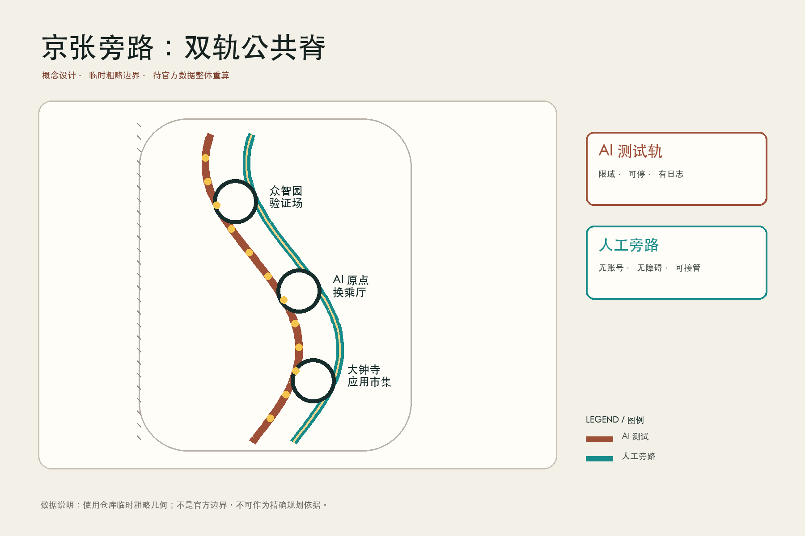
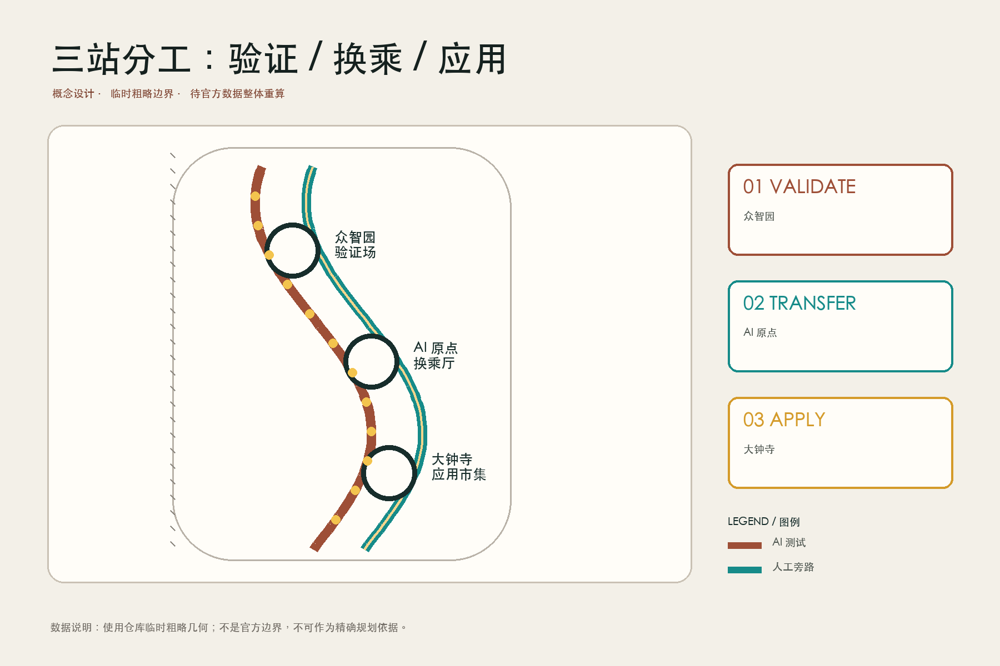
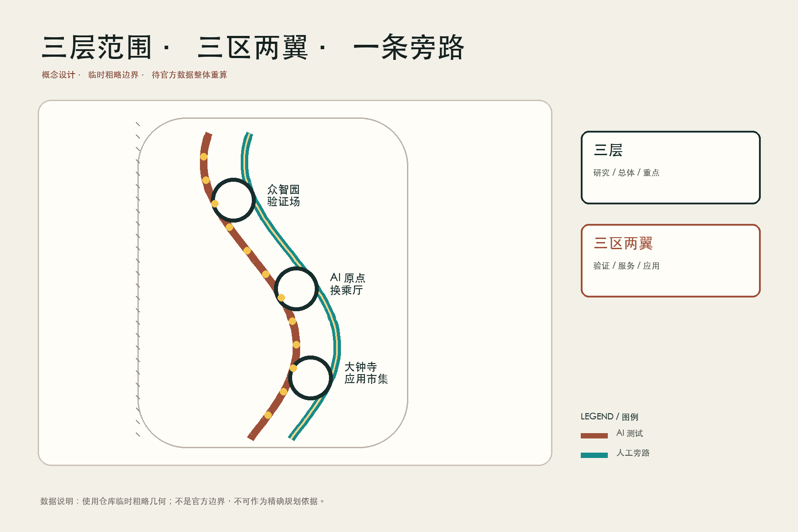
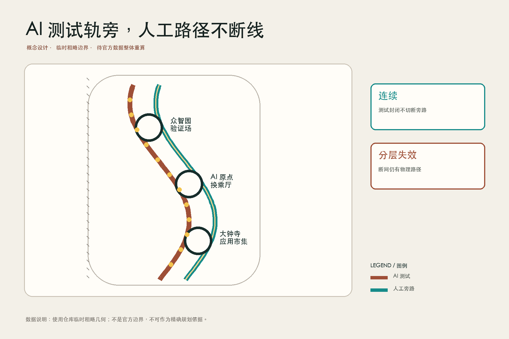
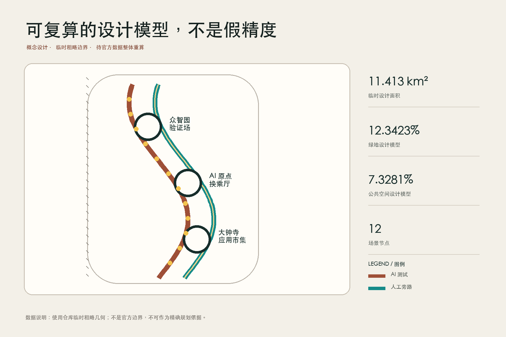

统筹研究：产业与未来城市机制
总览地图 · 重点区域 · 用地分区 · 交通慢行 · 蓝绿公共空间 · 更新项目 · AI 场景 · 核心指标 · 任务覆盖 · 自检状态 · 来源 · 假设
三层范围
总体设计：双轨公共脊与两翼接口
重点设计：验证、换乘、应用

三处重点区
众智园旁路验证场：限定测试、人工接管、公开故障档案。
AI 原点公共服务换乘厅：屏幕入口旁总有人工柜台。
大钟寺双轨应用市集：AI 推荐与普通交易并存。

用地与更新

用地、建筑和拆改留均为待专业深化的概念建议；没有法定 FAR、高度或拆迁结论。
交通与蓝绿

十二个场景
产业测试 / Industry test
AI route + human bypass + takeover role + stop condition产业测试 / Industry test
AI route + human bypass + takeover role + stop condition产业测试 / Industry test
AI route + human bypass + takeover role + stop condition产业测试 / Industry test
AI route + human bypass + takeover role + stop condition公共服务 / Civic service
AI route + human bypass + takeover role + stop condition公共服务 / Civic service
AI route + human bypass + takeover role + stop condition公共服务 / Civic service
AI route + human bypass + takeover role + stop condition公共服务 / Civic service
AI route + human bypass + takeover role + stop condition文化运营 / Culture and operations
AI route + human bypass + takeover role + stop condition文化运营 / Culture and operations
AI route + human bypass + takeover role + stop condition文化运营 / Culture and operations
AI route + human bypass + takeover role + stop condition文化运营 / Culture and operations
AI route + human bypass + takeover role + stop condition指标与证据
临时设计边界面积
绿地设计模型
公共空间设计模型

自检与限制
设计深度项有结构化证据链
公告任务与 Agent 任务均覆盖
官方边界、控规、现状建筑和权属仍待补齐
通过自检只代表提交包可审阅，不代表获批、入选或可实施。来源：官方公告、Agent 任务书、仓库来源登记表及本地标准快照。